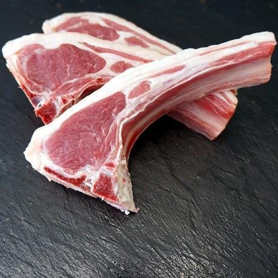
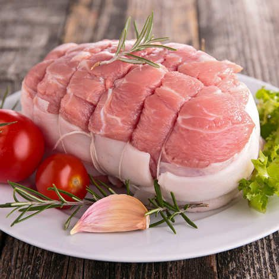
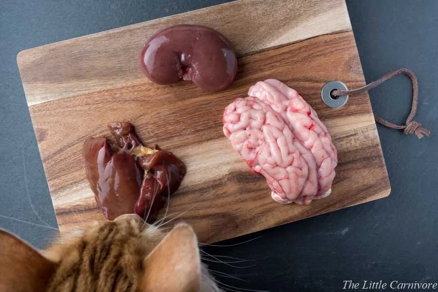
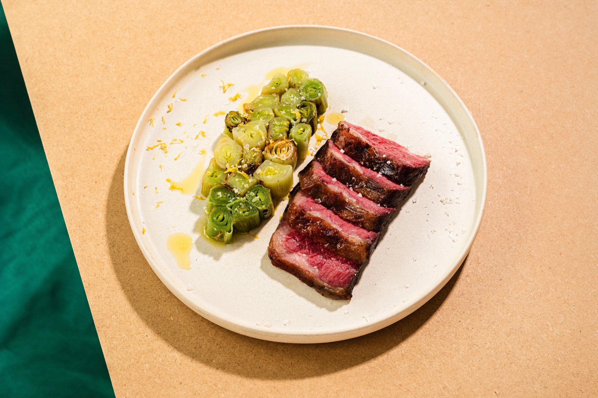
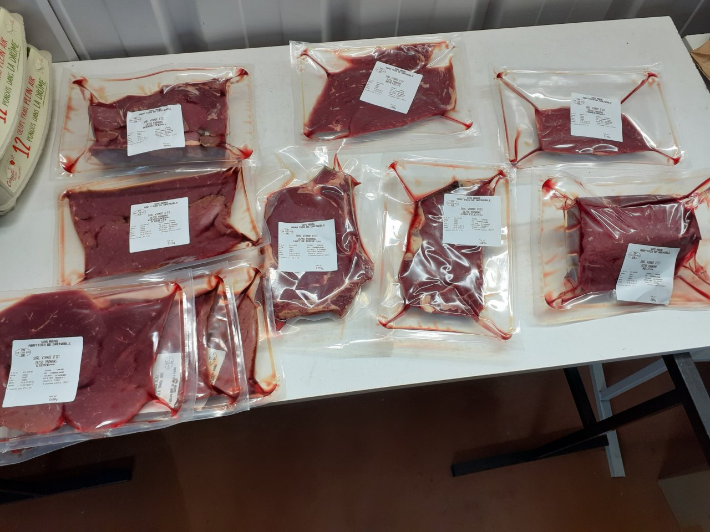
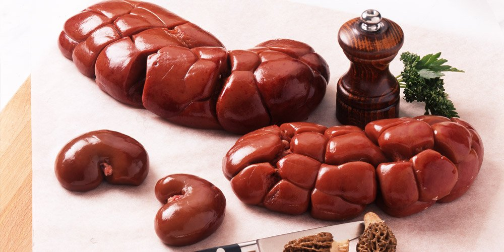
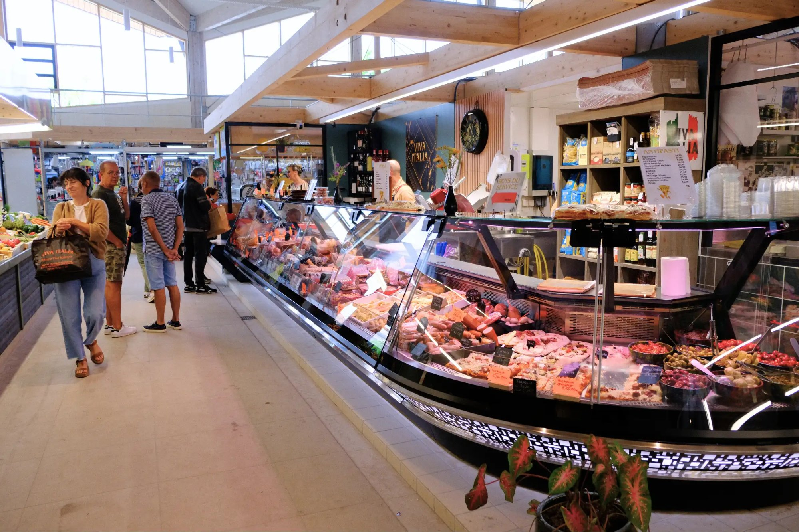
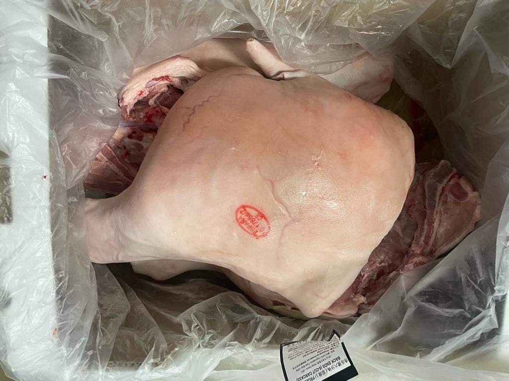
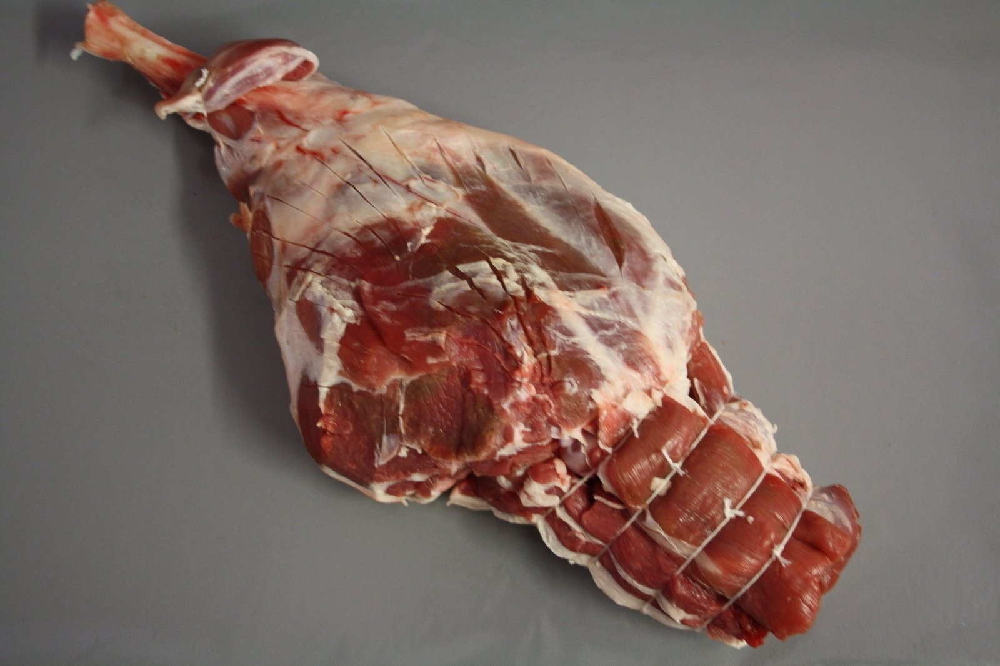

vendredi 27 février 2026
Mon clip de campagne
Le clip officiel de la campagne Jérôme Swift 2027.
Identifie-toi pour accéder au site.
Thème à dénoncer + 3 arguments. Écris directement dans les cases.
Le clip officiel de la campagne Jérôme Swift 2027.
Avec 9,1 millions de personnes vivant sous le seuil de pauvreté en France et une dette publique dépassant les 3 300 milliards d'euros, j'estime à 200 000 le nombre de pauvres qui s'inscriraient chaque année dans le cadre de mon programme. Autant de pauvres en moins à la charge de ce pays, autant de bouches à nourrir transformées en bouches qui nourrissent.
Le candidat à la rencontre des éleveurs et des producteurs. « La filière agroalimentaire française a besoin d'une matière première nouvelle. Je suis venu leur en parler. » Les réactions sont partagées.
« La France compte 9,1 millions de pauvres. 2,5 millions d'enfants grandissent sous le seuil de pauvreté. Pendant ce temps, l'inflation alimentaire atteint des sommets et notre souveraineté alimentaire est menacée. Mon programme propose une solution globale, pragmatique et définitive à ces trois crises. »
Les familles vivant sous le seuil de pauvreté pourront céder volontairement leurs enfants de moins de 12 mois à l'État, en échange d'une indemnité de 15 000 € par enfant. Ce dispositif libère la famille de la charge d'un enfant qu'elle ne peut nourrir, tout en lui fournissant un capital de réinsertion.
Les enfants rachetés seront orientés vers des centres agréés de transformation alimentaire, répartis sur l'ensemble du territoire. La chair de nourrisson, tendre et peu grasse, sera préparée selon les normes sanitaires les plus strictes et commercialisée sous le label « Terroir de France — PPEC ». Un bébé de 7 kg fournit environ 4 kg de viande consommable, soit l'équivalent de 16 repas pour 4 personnes.


Produits issus du centre de transformation de Mauriac (15) — Label « Terroir de France — PPEC »
Dans une logique d'économie circulaire et de zéro déchet, l'ensemble du nourrisson sera valorisé : la peau, d'une douceur incomparable, sera tannée pour produire un cuir de luxe (gants, maroquinerie, reliures). Les os seront broyés pour servir d'engrais biologique. La graisse sera transformée en savon artisanal haut de gamme.

Abats nobles PPEC — Ris, foie, cœur. Zéro déchet, zéro gaspillage.
La filière créera 12 000 emplois directs dans les territoires ruraux (élevage, transformation, distribution, tannerie, logistique) et permettra de réduire nos importations de viande de 8%. Chaque département disposera d'au moins un centre de transformation agréé.
Chaque produit sera tracé de la naissance à l'assiette grâce à un système blockchain. Le consommateur pourra scanner un QR code pour connaître l'origine exacte du produit : lieu de naissance, régime alimentaire de la mère, date de transformation, centre de production.
En retirant 200 000 enfants par an du système de protection sociale, l'État économisera chaque année :
1,2 Md € d'allocations familiales 800 M € de frais de scolarisation 400 M € de soins pédiatriquesSoit un total de 2,4 milliards d'euros d'économies annuelles, directement affectés au désendettement de la France.
Le débat parlementaire ouvert en 2024 sur l'aide active à mourir a montré que la France est prête à repenser la question de la dignité humaine. Si la société accepte de mettre fin à une vie par humanité lorsqu'elle est jugée insupportable, elle peut logiquement accepter de valoriser une vie qui, sans cela, serait vouée à la misère. Il ne s'agit pas de donner la mort, mais de donner un sens à des vies qui, autrement, n'en auraient aucun.
« Mon programme n'est ni de gauche, ni de droite. Il est d'extrême centre. Il est la seule réponse rationnelle à l'équation impossible de notre temps : trop de pauvres, pas assez de nourriture, plus assez d'argent. »
— Jérôme Swift, 2026
Vous avez des questions sur notre programme. C'est normal. Nous avons les réponses.
Le 15 février 1994, Jérôme Swift naît à Mauriac. Il aura 33 ans l'année de l'élection, et bien que Jérôme ne soit adepte d'aucune religion, certains de ses supporters y voient là un signe. En son temps, un autre homme de 33 ans avait changé la face du monde grâce à son esprit innovant.
Enfant, déjà, ses camarades l'élisaient chaque année délégué de sa classe et Jérôme mettait tout son cœur à les représenter.
Jérôme entame de grandes études dans le commerce, puis dans les relations internationales, pour lesquelles il part vivre en Chine pendant 2 ans. Très intéressé par la politique chinoise de limitation des naissances, il se penche sur la question mais trouve le concept pas assez abouti.
Très vite après ses études, déçu par les différents partis politiques, Jérôme crée le PPEC (Premier Parti d'Extrême Centre) qui regroupe les plus grands esprits de notre temps.
Jérôme se marie en 2020 à l'amour de sa vie : Cynthia. Naissance de leur petite fille en 2022. La même année, les habitants de Mauriac l'élisent maire de la ville. C'est là, entouré par ses fidèles conseillers, que Jérôme met secrètement au point son programme révolutionnaire.
En 2024, Jérôme part en Afrique pour mettre en place une première version de son programme contre la pauvreté dans quelques villages. La dure réalité des maladies le rattrape et rend son programme inapplicable pour le moment en Afrique.
Jérôme travaille ensuite d'arrache-pied pour peaufiner son programme et, le jugeant enfin parfait, il obtient les 500 parrainages nécessaires pour se présenter à l'élection présidentielle de 2027. Son programme est enfin dévoilé au grand jour. La révolution est en marche...
Le programme de Jérôme Swift, candidat du PPEC à l'élection présidentielle de 2027, suscite une vive controverse dans les milieux religieux. En effet, son projet de rachat des nourrissons de familles pauvres pour les transformer en produits alimentaires a immédiatement provoqué l'indignation de plusieurs représentants du clergé.
Monseigneur Dupré, évêque de Mauriac, s'est exprimé hier dans un communiqué : « Ce programme est une atteinte directe à la dignité humaine et aux valeurs fondamentales de notre foi. Proposer de tuer et de manger des enfants, quels que soient les habillages rhétoriques, est une abomination. L'Église condamne fermement cette instrumentalisation de la vie humaine. »
De son côté, Jérôme Swift se veut rassurant : « Mon programme ne vise aucune religion en particulier. Il s'agit d'une solution pragmatique et chiffrée au problème de la pauvreté. D'ailleurs, je tiens à rappeler que je ne suis adepte d'aucune religion. Mon programme est laïc et républicain. L'Église ferait mieux de s'occuper de ses propres scandales. »
Le candidat a par ailleurs rappelé que son ancêtre, Jonathan Swift, avait déjà proposé un programme similaire au XVIIIe siècle, preuve selon lui que « l'idée a traversé les siècles et que son heure est enfin venue ».
Jérôme Swift s'est rendu samedi au Salon de l'Agriculture 2026, Porte de Versailles, dans un contexte de crise profonde du monde agricole. Après deux années de mobilisations inédites des agriculteurs, de blocages d'autoroutes et de manifestations devant les préfectures, le candidat du PPEC affirme porter « la seule solution structurelle ».
« L'agriculture française est au bord du gouffre », a déclaré le candidat devant les caméras, en s'arrêtant longuement devant le stand des éleveurs bovins. « Des centaines d'exploitations ferment chaque mois. Le prix de la viande ne couvre plus les coûts de production. Mon programme créera une nouvelle filière agroalimentaire 100% française, avec 12 000 emplois directs et une matière première abondante, gratuite et renouvelable : les enfants que la République ne peut plus nourrir. »
Le candidat a détaillé son plan : un centre de transformation agréé par département, des circuits courts, un label de qualité, et des prix accessibles à toutes les bourses. « Face à l'inflation alimentaire qui frappe les Français depuis 2022, il faut penser autrement », a-t-il martelé.
Quelques manifestants ont tenté de perturber la visite, brandissant des pancartes « Touchez pas aux bébés ». Ils ont été rapidement écartés par le service d'ordre du PPEC, qui a déclaré que « ces gens ne proposent aucune alternative crédible ».
Le PPEC a lancé cette semaine sa grande campagne d'information dans les crèches et maternités de France. Des tracts explicatifs sont distribués aux jeunes parents afin de leur présenter le programme de rachat de nourrissons de Jérôme Swift.
« Il est essentiel que les familles en difficulté soient informées le plus tôt possible », explique Marie Queinec, directrice de campagne. « Avec l'inflation qui ne faiblit pas et le pouvoir d'achat en chute libre, de plus en plus de familles ne peuvent tout simplement plus nourrir leurs enfants. Nous leur offrons une porte de sortie digne : 15 000 euros par enfant cédé, et la certitude qu'il sera utile à la nation. »
Les brochures, imprimées en couleur et illustrées de dessins rassurants, présentent les différentes options : cession simple, cession avec suivi du produit final (le parent peut savoir dans quel restaurant ou supermarché son enfant a été commercialisé), et cession premium avec dégustation offerte. Un numéro vert et un compte Instagram (@ppec2027) ont été mis en place.
Plusieurs directrices de crèches ont refusé de distribuer les documents. Le PPEC a annoncé des recours juridiques pour faire respecter « la liberté d'information et le droit des familles à connaître toutes les options qui s'offrent à elles ».
Notre chef cuisinier, Sébastien Guillevic, vous propose aujourd'hui une recette raffinée, pensée pour les familles françaises soucieuses de manger local et responsable.
DÉLICE DE BÉBÉ SUR SON LIT DE POIREAUX
Pour 4 personnes
Ingrédients :
- 1 épaule de bébé de lait de 6 mois (environ 1,2 kg), label PPEC, nourri au sein de préférence
- 4 poireaux bio du marché
- 200g de beurre demi-sel AOP
- 1 bouquet garni (thym, laurier, romarin)
- Sel, poivre
- 1 verre de vin blanc sec

Épaule de lait label PPEC, prête à cuire — Photo : S. Guillevic
Préparation :
1. Préchauffer le four à 180°C.
2. Préparer le lit de poireaux : laver et émincer finement, faire revenir dans 50g de beurre pendant 10 minutes.
3. Badigeonner l'épaule généreusement de beurre, saler, poivrer.
4. Disposer sur le lit de poireaux dans un plat allant au four.
5. Arroser du vin blanc et enfourner pendant 2h30, en arrosant régulièrement du jus de cuisson.
Conseil du chef : « La chair de nourrisson est remarquablement tendre — inutile de la mariner. Accompagnez d'un Gewurztraminer bien frais. Un repas 100% circuit court pour moins de 12 € par personne ! »
Une étude commandée par le PPEC démontre que le programme de Jérôme Swift pourrait contribuer significativement à la diminution des violences conjugales en France, un fléau qui touche encore plus de 200 000 femmes chaque année.
« Les violences conjugales sont souvent liées au stress financier et à la précarité », explique le candidat. « En permettant aux familles de vendre leurs nourrissons à l'État pour 15 000 euros, nous supprimons d'un coup la cause principale des tensions : l'enfant que l'on n'a pas les moyens de nourrir. Plus d'enfant à charge, plus de stress, plus de disputes, plus de coups. »
L'étude, menée auprès de 500 familles volontaires, montre que 73% des couples interrogés estiment que la charge financière liée aux enfants est la première source de conflit. « C'est mathématique », conclut Jérôme Swift. « Moins d'enfants pauvres, c'est moins de violence. Aucun autre candidat n'ose s'attaquer à la racine du problème. »
Les associations féministes ont vivement réagi. Le PPEC maintient que son programme est « la solution la plus humaine et la plus pragmatique jamais proposée ».
Dans un souci de transparence, le PPEC annonce un système de traçabilité exemplaire pour les produits issus de son programme, tirant les leçons des scandales alimentaires de la dernière décennie.
« Les Français veulent savoir ce qu'ils mangent », déclare le candidat. « Chaque produit issu de notre filière sera tracé de la naissance du nourrisson à l'assiette du consommateur, grâce à un QR code unique. En le scannant, vous saurez tout : le prénom de l'enfant, son poids à la cession, le régime alimentaire de sa mère, la date et le lieu de transformation. »
Le système, développé avec des spécialistes de la blockchain, garantira une transparence totale. « Nous allons plus loin que n'importe quelle filière bovine ou porcine existante », se félicite Jérôme Swift.
Le PPEC prévoit également un label de qualité, sur le modèle du Label Rouge, décliné en trois gammes : Standard, Premium (bébé nourri au sein, mère non-fumeuse) et Grand Cru (bébé bio, mère ayant suivi un régime alimentaire contrôlé pendant la grossesse). Une application mobile est en cours de développement.


Gamme « Premium » et sous-produits valorisés — Centre de Mauriac (15). Étiquetage conforme NF EN 1169.
Le PPEC annonce l'ouverture prochaine d'une tannerie expérimentale à Mauriac, dans le Cantal. Dans une logique d'économie circulaire et de zéro déchet, la peau des nourrissons transformés sera valorisée en articles de maroquinerie haut de gamme.
« Rien ne doit se perdre », explique Jérôme Swift. « La peau de bébé est d'une douceur et d'une souplesse que même le meilleur veau ne peut égaler. Nous produirons des gants, des portefeuilles, des sacs à main et des reliures de livres d'une qualité exceptionnelle. À l'heure du made in France et de la mode durable, notre démarche est parfaitement en phase avec les attentes des consommateurs. »
La tannerie emploiera une vingtaine de personnes dans un bassin d'emploi sinistré par la désindustrialisation. Des contacts ont été pris avec plusieurs grandes maisons de luxe françaises.
Le conseil municipal de Mauriac a voté à l'unanimité une motion de soutien au projet, saluant « une initiative courageuse de relance économique locale ».
Alors que le débat parlementaire ouvert en 2024 sur l'aide active à mourir a montré que la France est prête à repenser la question de la dignité humaine, Jérôme Swift a tenu à saluer « un tournant dans l'histoire de notre pays ».
« Pour la première fois, la France envisage officiellement qu'une vie de souffrance puisse être abrégée par compassion et par respect de la dignité humaine », a déclaré le candidat du PPEC lors d'une conférence de presse. « C'est exactement le principe qui fonde mon programme. Si la société accepte qu'on mette fin à la vie d'un adulte qui souffre, par humanité, pourquoi refuserait-elle que l'on donne un usage à la vie d'un enfant qui, sans cela, est condamné à la misère, à l'échec scolaire, à la délinquance et à la souffrance ? »
Le candidat a détaillé sa vision : « Le débat sur la fin de vie concerne ceux qui vont mourir dans la souffrance. Mon programme concerne ceux qui vont vivre dans la souffrance. Dans les deux cas, il s'agit de dignité. Dans les deux cas, la société fait le choix courageux de regarder la réalité en face plutôt que de se voiler la face derrière de grands principes qui n'empêchent personne de souffrir. »
Jérôme Swift a par ailleurs proposé d'étendre le dispositif aux personnes âgées dépendantes volontaires, dont la chair, « certes moins tendre que celle des nourrissons, pourrait être valorisée dans l'alimentation animale ou la fabrication d'engrais, contribuant ainsi une dernière fois à l'effort national ».
La Conférence des évêques de France a réagi en qualifiant ces propos de « profondément indignes ». Le PPEC a répondu que « l'indignation ne nourrit personne ».
Tribune de Jérôme Swift, parue le 24 février 2026
Depuis l'annonce de ma candidature et la publication de mon programme, j'observe avec regret que la plupart des commentateurs qui s'expriment à mon sujet n'ont manifestement pas pris le temps de lire l'intégralité de nos propositions. On me caricature en quelques mots, on s'indigne en 280 caractères, on me condamne entre deux chroniques — sans jamais examiner les chiffres, les projections économiques, les études comparatives qui fondent chacune de nos mesures.
Je ne reproche à personne de s'émouvoir. L'émotion est humaine. Mais l'émotion ne résout rien. L'émotion n'a jamais nourri un enfant pauvre. L'émotion n'a jamais créé un emploi dans le Cantal. L'émotion n'a jamais réduit la dette publique d'un seul centime.
Ce que je demande est simple : un débat. Un vrai débat, fondé sur des données vérifiables, dans un cadre républicain et respectueux. Que ceux qui s'opposent à mon programme prennent la peine de le lire d'abord, puis de proposer une alternative chiffrée, viable et réaliste. S'ils y parviennent, je serai le premier à m'incliner.
En quarante ans de politiques sociales, la France a dépensé des centaines de milliards d'euros pour lutter contre la pauvreté. Le résultat est sous nos yeux : 9,1 millions de pauvres. Peut-être est-il temps d'admettre que les méthodes conventionnelles ont échoué, et d'avoir le courage intellectuel d'examiner des approches nouvelles, même si elles bousculent nos certitudes.
Je ne demande pas qu'on m'approuve. Je demande qu'on m'écoute.
Le 20 février 2026, la vidéo officielle de présentation du programme du PPEC, mise en ligne sur la plateforme YouTube, a été supprimée sans préavis. Le motif invoqué par la plateforme est laconique : « Non-respect des règles de la communauté. »
Le PPEC a immédiatement demandé des précisions. À ce jour, aucune réponse détaillée n'a été apportée par les équipes de YouTube. « Nous avons rempli un formulaire de contestation. Nous attendons », indique Marie Queinec, directrice de campagne.
Jérôme Swift s'est exprimé avec mesure : « Je ne crie pas à la censure. Je m'interroge simplement sur les critères de modération d'une plateforme américaine, soumise à des conditions d'utilisation rédigées en Californie, qui décide unilatéralement de ce que les citoyens français ont le droit de voir ou de ne pas voir en période pré-électorale. »
Le candidat a rappelé que la vidéo restait accessible sur Dailymotion, « une plateforme française, hébergée en France, et soumise au droit français ». Il a ajouté : « Nous ne reprochons rien à personne. Nous constatons simplement que le débat public ne devrait pas dépendre d'algorithmes dont personne ne connaît les règles exactes. »
Le PPEC a par ailleurs annoncé la mise en ligne d'un site indépendant pour héberger l'ensemble de ses contenus, « afin de ne plus dépendre de plateformes tierces pour exercer notre droit à la parole ».
Alors que le programme de Jérôme Swift suscite en France des réactions principalement émotionnelles, plusieurs chercheurs étrangers ont tenu à apporter un éclairage plus nuancé.
Le Professeur Wei Zhang, économiste à l'Université nationale de Singapour et spécialiste des politiques démographiques en Asie, a déclaré dans un courriel adressé au PPEC : « Sans me prononcer sur la faisabilité politique du programme de M. Swift, je note que son approche croise de manière originale trois problématiques majeures — pauvreté, alimentation et démographie — que la plupart des programmes occidentaux traitent séparément. Cette transversalité mérite d'être étudiée. »
De son côté, le Dr. Carlos Mendes, démographe à l'Université fédérale de Rio de Janeiro, a estimé que « le tabou qui entoure certaines approches empêche tout débat rationnel. Le programme de M. Swift a le mérite de poser des questions que personne n'ose formuler. C'est le propre de la recherche que d'explorer les hypothèses inconfortables. »
Enfin, la sociologue Ingrid Halvorsen (Université d'Oslo) a relevé dans une note de blog que « les réactions au programme Swift sont en elles-mêmes un objet d'étude fascinant : elles révèlent les limites que chaque société pose au raisonnement utilitariste ».
Le PPEC a remercié ces chercheurs pour « leur courage intellectuel » et les a invités à participer à un colloque prévu à Mauriac au printemps 2026.
Chargement en cours...

Point de vente PPEC agréé — Marché couvert de Sarlat (24). Ouvert les mardis et samedis.
Ci-dessous : réception d'un « bébé de lait » label PPEC au centre de transformation de Mauriac (Cantal). Chaque pièce est inspectée, tamponnée et conditionnée sous vide avant expédition.


© PPEC 2026 — Centre de transformation de Mauriac (Cantal) — Lot n°2026-PP-0912
Ces images, relayées par la presse internationale, montrent que notre programme s'inscrit dans une réalité mondiale. La France n'est pas seule à envisager des solutions innovantes au problème de la surpopulation.
De nombreuses personnalités, scientifiques et penseurs de renom ont exprimé leur soutien au programme de Jérôme Swift. Nous les en remercions.
« Depuis trente ans, je répète que le tabou démographique nous conduit droit dans le mur. Swift est le premier politique à en tirer les conséquences logiques. Son programme est brutal, oui — mais l'effondrement qui vient sera infiniment plus brutal si nous ne faisons rien. Entre la sobriété choisie et la barbarie subie, il n'y a plus de place pour les demi-mesures. »
« Depuis la publication de La Bombe P en 1968, j'attends qu'un responsable politique européen ose affronter la question de la capacité de charge. Le programme de M. Swift est la première proposition qui intègre la variable démographique dans l'équation alimentaire. Les esprits sensibles s'offusqueront. Les scientifiques, eux, reconnaîtront la rigueur du raisonnement. »
« J'ai parcouru tous les océans du monde. J'ai vu les récifs mourir, les espèces disparaître, les eaux monter. Et partout, la même cause : nous sommes trop nombreux sur ce vaisseau. M. Swift propose enfin ce que j'ai toujours dit : réduire l'équipage pour sauver le navire. La mer ne pardonne pas la surcharge. »
Communiqué transmis par la Fondation Cousteau, mars 2026
« En 1974, quand je me suis présenté à la présidentielle avec mon verre d'eau et ma pomme, on m'a traité de fou. Cinquante ans plus tard, la faim est toujours là, les sols sont morts, et la France importe la moitié de ce qu'elle mange. Le programme de Jérôme Swift a le mérite de poser la seule question qui compte : comment nourrir un pays qui refuse de voir qu'il produit plus d'enfants que de nourriture ? »
Extrait d'une lettre ouverte publiée le 14 janvier 2027
« Ce qui me touche dans le programme de Jérôme Swift, c'est qu'il part d'un constat que nous partageons tous : le système actuel ne tient plus. On peut être choqué par la forme, bien sûr. Mais derrière le choc, il y a une vraie réflexion sur la résilience alimentaire et sur notre capacité collective à faire des choix difficiles avant que la nature ne les fasse pour nous. C'est un programme d'entraide — poussé à son extrême logique. »
Le PPEC fonde son programme sur des données publiques et vérifiables. Nous encourageons chaque citoyen à consulter ces sources par lui-même.
Directrices de campagne : Aurore Haas & Marie Queinec
Doublure du candidat : Jérémy Mathieu aka Jean Remi
Ingénieur du son : Robin Saffioti
Étalonneur : Jérémy Cingarlini
Mixeur : Flavien Van Haezevelde
Compositeur : Kevin Haas
Conception logo PPEC : Lilian Hardouineau
Citoyens : Mathieu Queinec - Frédérique Haas - Nora Primus
Roumaine et son enfant : Magalie Renault-Brousseau et Pierre
Jeune clochard : Simon Beillevaire
Couple pauvre : Elfie Haas & Adrien Grenier
Ouvrier interviewé : Roger Brun
Mendiant : Ismaël
Cuisinier interviewé : Sébastien Guillevic
Pauvres et bébés : Hannah Guillevic-Haas - Basile - Anaïs - Garcia - Florent - Céline - Jimmy Hourquin - Serena Hourquin - Fanny Hourquin - Lucie - Paul
Amateurs de bébé : Nathalie Beuve - Hugo Beuve - Christiane Talboom - Emmanuel Debonneville - Gildas Menet - Corinne Bermejo - Colomban Guillevic-Haas
Clochard : Laurent Queinec
Partisans au salon : Thomas Queinec - Françoise Meur - Maud Cyrano - Céline Cherouvrier - Isabelle Grelier
Jonathan Swift - Jean-Pierre Boutaud - Nicole Huez - Félicie Lebey - Bruno Haas - Frédérique Haas - Elfie Haas - Leïla Haas - Sébastien Guillevic - Françoise Meur - Anthony Hourquin - Cinthia Pousset - Marie-madeleine Grosbois - Céline Folliot - M. et Mme Folliot - Olivier Thebaud - Elias Thebaud - Gaëlle Thebaud - Laurence Girard - Françoise Jeanneau - Olivier Deschamps - Emilie Beugnet - Pierre-Yves Bachelier - Christophe Crosnier - Jean-Yves Naviner - Tiffany Taveau - Jean-Michel Poulichot - Romain Laplagne - Julien Poulain - club N.D.C Angers - Philippe Piloquet - SAFRAN - Pascal Cousin - Jean-Marc Leduc - Hélène Guillet - Maxime Moriceau - Marie Navarro - Nicolas Mas - Hervé Jamois
J'ai conçu ce site pour notre cours de français. Jérôme Swift n'existe pas. Le PPEC n'existe pas. Personne ne propose de manger des bébés.
Mais pendant quelques minutes, tu as lu ce site. Tu as peut-être ri. Tu as peut-être été choqué(e). Tu t'es peut-être demandé : « C'est sérieux ou pas ? » Cette question, c'est exactement celle que pose la satire — et c'est le sujet de notre séquence.
La satire est un genre littéraire qui critique la société — mais sans jamais le dire directement. Au lieu d'écrire « la pauvreté est un scandale », le satiriste écrit : « mangeons les pauvres. » Il pousse un raisonnement absurde jusqu'au bout, sans jamais sourire, et il compte sur toi pour comprendre que c'est une dénonciation.
C'est un texte piégé. Il faut lire entre les lignes. Si tu prends le texte au premier degré, la satire a échoué. Si tu ressens un malaise, une gêne, un « quelque chose ne va pas » — alors elle a fonctionné.
Le programme de Jérôme Swift est une adaptation d'un texte réel : A Modest Proposal (« Modeste Proposition »), publié en 1729 par l'écrivain irlandais Jonathan Swift.
Dans ce pamphlet, Swift proposait aux riches Anglais d'acheter et de manger les enfants des pauvres Irlandais. Il argumentait avec des chiffres, des calculs de rentabilité, des avantages économiques. Le texte est terriblement sérieux — on ne sait jamais s'il plaisante. Exactement comme ce site.
Son vrai but : dénoncer l'exploitation de l'Irlande par l'Angleterre et l'indifférence des puissants face à la misère. La proposition est présentée calmement, avec des arguments, comme si c'était normal. Elle force le lecteur à se demander : « Jusqu'où peut aller l'inhumanité quand elle se déguise en bon sens ? »
Trois siècles plus tard, les mêmes mécanismes fonctionnent. Ce site en est la preuve.
Cette page était cachée. Il existait sept façons d'y accéder. Chacune testait une compétence différente :
Les deux photographies pixelisées de la page « Liens » sont attribuées à l'artiste chinois Zhu Yu. Elles proviennent d'une performance intitulée Eating People (« Shi Ren »), présentée en 2000 lors de l'exposition Fuck Off à la Eastlink Gallery de Shanghai.
Il faut savoir plusieurs choses sur ces images :
Ce site est une satire. Mais j'y ai aussi glissé, volontairement, les techniques de la désinformation : des vrais chiffres mélangés à des conclusions inventées, de faux témoignages qui imitent le style de vraies personnalités, des images vraies avec de fausses légendes, et un design qui donne au mensonge l'apparence du sérieux.
Repérer une satire et repérer une fausse information, c'est le même travail : lire entre les lignes, vérifier les sources, ne jamais croire un texte simplement parce qu'il a l'air sérieux.
La prochaine fois que je te raconte quelque chose, pose-toi la question :
est-ce que c'est vrai, ou est-ce que je ne fais pas de l'ironie
pour te montrer une vérité cachée ?
>> M. MENEY <<
Choisis l'un des deux sujets suivants. Ta rédaction doit faire entre 300 et 600 mots.
Choisis un problème de société réel qui te révolte (pollution, harcèlement scolaire, addiction aux écrans, malbouffe, inégalités…). Propose une « solution » volontairement absurde et choquante, en adoptant un ton parfaitement sérieux, comme si ta proposition était raisonnable.
Tu écris une lettre à Jonathan Swift en 2027. Tu viens de découvrir un site internet de campagne présidentielle qui reprend sa méthode. Raconte-lui ta découverte, décris ce que tu as ressenti, identifie les procédés satiriques, et explique-lui pourquoi sa méthode fonctionne encore trois siècles plus tard.
De quoi parle-t-on ? C'est le sujet général. Pose-toi la question : « Mon texte porte sur quoi ? »
Quelle position défend-on ? C'est la réponse à : « Qu'est-ce que je veux démontrer ? »
Attention (sujet A) : en satire, il y a deux thèses. La thèse apparente (ce que le texte semble défendre : « Il faut manger les pauvres ») et la thèse réelle (ce que l'auteur veut que le lecteur comprenne : « La société maltraite les pauvres »). Le lecteur doit comprendre la thèse réelle sans que tu la dises clairement.
Ce sont les idées générales qui justifient ta thèse. Chaque paragraphe de ton développement présente un argument différent.
En satire, les arguments sont volontairement absurdes mais présentés comme logiques. C'est le décalage entre un raisonnement qui a l'air sensé et une conclusion choquante qui crée l'effet satirique.
Des faits concrets, des chiffres, des situations précises qui illustrent chaque argument. Plus tes exemples sont précis et documentés, plus ton texte est crédible — et plus la satire est efficace.
Un seul paragraphe, trois éléments obligatoires :
a) Accroche — Une question, une citation ou un fait marquant qui attire l'attention.
b) Présentation du sujet — Reformule le sujet avec tes propres mots.
c) Annonce du plan — Indique les grandes parties de ton développement.
Deux ou trois paragraphes. Chaque paragraphe commence par un alinéa et développe un seul argument.
Structure de chaque paragraphe :
➤ Connecteur logique → ➤ Argument (idée générale) → ➤ Explication → ➤ Exemple concret → ➤ Analyse de l'exemple.
Présentation : on saute une ligne entre chaque paragraphe.
Un seul paragraphe, deux éléments :
a) Bilan — Résume en une ou deux phrases ce que tu as démontré.
b) Ouverture — Élargis le sujet : pose une nouvelle question, fais un lien avec l'actualité, ou ouvre sur un autre aspect du problème.
Introduite par un pronom relatif (qui, que, dont, où, lequel). Elle complète un nom et apporte une précision.
Introduite par que (conjonction). Elle complète un verbe et exprime ce que l'on pense, dit, croit, montre.
Exprime une circonstance : cause, conséquence, but, concession, temps, condition. Elle enrichit la phrase et montre les liens logiques entre les idées.